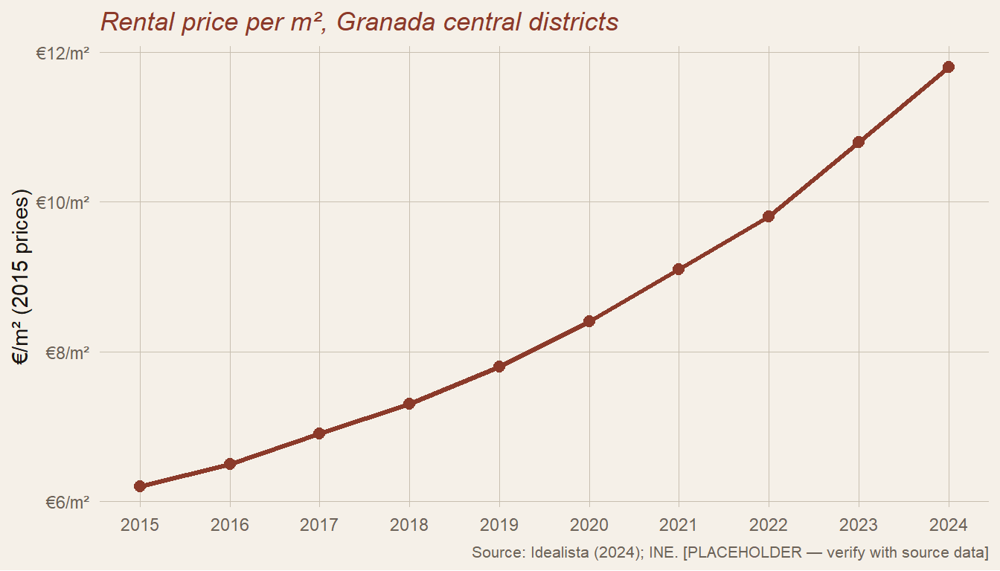
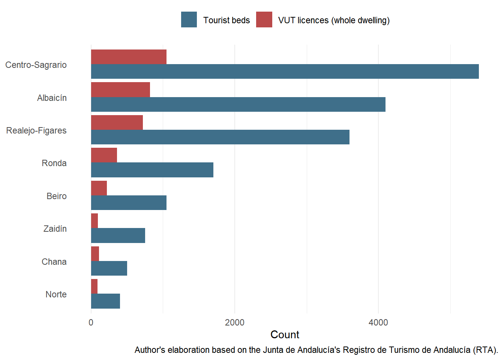
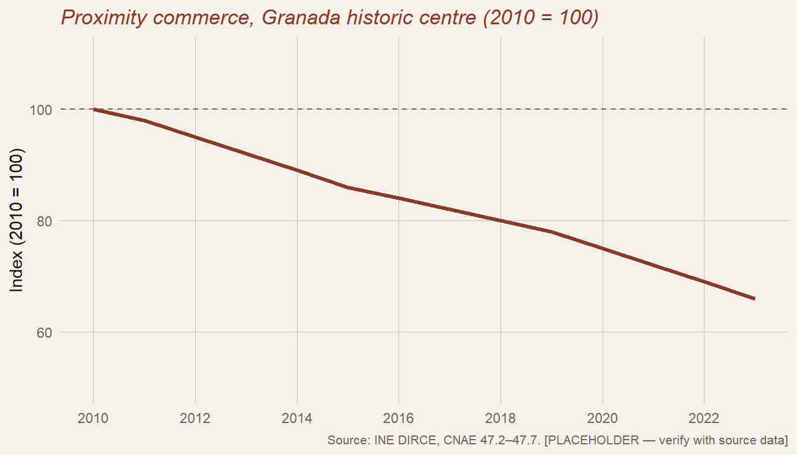

Appendix A · Notes on Data and Sources
10.1 A note on measurement
The statistical apparatus for documenting the disappearance of small neighbourhood bars in Spain is considerably coarser than the phenomenon it claims to describe. The Instituto Nacional de Estadística, through its Directorio Central de Empresas (DIRCE), publishes an annual count of establecimientos de bebidas (beverage establishments) under code CNAE 5630, a category which aggregates bars, taverns, beer houses, late bars, discobars and cafés into a single undifferentiated total. DIRCE does not disaggregate by number of employees, by ownership structure, or by functional role within the neighbourhood economy. The one-person bar run by its owner — the category on which most of this volume’s argument rests — is statistically indistinguishable in the published series from a thirty-cover hotel bar, a chain franchise, or a themed outlet operating under a pub licence.
A second limitation matters for any comparison across time. Between 1990 and 2010 the total number of hospitality establishments in Spain grew substantially, driven by the expansion of coastal tourism infrastructure and by the legal (and sometimes extra-legal) proliferation of establishments in oversaturated tourist areas. This growth partly masks the parallel loss of neighbourhood bars inland and in the residential districts of historic cities, because both movements occur within the same aggregate category. Any reader consulting DIRCE in search of confirmation of the decline described in this volume should be aware that the evidence must be reconstructed from within a dataset that was not designed to see it.
The figures that follow are therefore presented as orientative rather than exhaustive. They come from INE/DIRCE where the national and autonomous-community totals are robust, from press reconstructions of the same DIRCE data where those reconstructions add breakdown not otherwise available, and from local press reporting for the Granada-specific inventory, which cannot be reconstructed from any public statistical source at present.
10.2 National trend: bars in Spain, 2010–2024
| Year | Beverage establishments (CNAE 5630) | Change vs. 2010 |
|---|---|---|
| 2010 | 202,720 | — |
| 2019 | 181,230 | −10.6% |
| 2022 | 175,890 | −13.2% |
| 2023 | 168,065 | −17.1% |
| 2024 | 163,890 | −19.2% |
Source: INE, Directorio Central de Empresas, 1 January of each reference year. 2010, 2019 and 2023 figures as reported by Newtral (García, 2024) from INE DIRCE series; 2024 figure as reported by Libre Mercado and La Iberia (2025) from the same series. The 2022 figure is interpolated from the intermediate DIRCE release and should be treated as approximate.
Over the same period, the count of restaurants and food-serving establishments under CNAE 5610 rose from 71,818 to roughly 83,700, an increase of approximately sixteen per cent. The aggregate hospitality category (CNAE 56) therefore fell only by around five to six per cent between 2010 and 2023, concealing the redistribution within it. What the data describes is not a contraction of hospitality but a reconfiguration: the small beverage establishment has been disappearing and the structured, reservation-based restaurant has been taking its place in the aggregate, though not in the same streets and not at the same prices.
10.3 Regional breakdown: where bars have disappeared fastest
| Autonomous community | Bars lost 2010–2023 (abs.) | Change (%) |
|---|---|---|
| Comunidad de Madrid | −5,946 | −26.3% |
| Castilla y León | −3,639 | −24.0% |
| Galicia | −3,876 | −23.5% |
| Principado de Asturias | −1,432 | −22.9% |
| Castilla-La Mancha | −1,904 | −20.8% |
| Canarias | −861 | −10.2% |
| Andalucía | −3,712 | −10.1% |
| Ceuta | −20 | −8.4% |
| Melilla | −12 | −5.7% |
| Navarra | −9 | −0.4% |
Source: INE DIRCE, as reconstructed by Newtral (García, 2024). Autonomous communities ordered by relative loss. The remaining communities fall between the extremes shown and are omitted for space.
The low figure for Andalucía in the relative column is consistent with the caveat entered in §A.1. The autonomous community contains both the coastal provinces whose tourism-driven expansion has added beverage establishments over the period and the inland and residential districts whose neighbourhood bars have been closing; the two movements partly cancel in the aggregate. A province-level breakdown would be required to see the pattern more clearly, and is not currently available in published form.
10.4 Granada: a documented inventory of closures
Because DIRCE does not publish a province-level series disaggregated by local function, the Granada-specific evidence in this volume draws on local press reporting. The inventory below is necessarily partial: it records establishments whose closure or demolition was considered sufficiently notable to be covered in Ideal, Granada Hoy, Granada Digital, Cadena SER Radio Granada, or the regional edition of El País, between 2017 and 2024. Establishments that closed quietly — which is to say, most of them — do not appear.
| Year | Establishment | Location | Notes |
|---|---|---|---|
| 2017 | Farmacia Zambrano | C. Reyes Católicos, 24 | Since 1876; included for context |
| 2019 | Bar La Sabanilla | C. San Sebastián | Since 1883; demolished after ruin order |
| pre-2020 | Bodegas Espadafor | Gran Vía | Emblematic; closed prior to pandemic |
| 2020 | Café Lisboa | Plaza Nueva | Closed during first-wave lockdowns |
| 2020 | Bar Luis XV | Avda. de Madrid | Proprietor retired; viability lost |
| 2020 | Cortijo Charavinillo | Vega de Granada | Rural-edge restaurant; closed 2020 |
| 2020 | El Chanquete | Pedro Antonio de Alarcón | Seafood specialist; transferred |
| 2020 | Kudamm I | Pedro Antonio de Alarcón | Hispano-German; small premises unviable |
| 2020 | La Blanca Paloma | Various | Closed during first-wave lockdowns |
| 2020 | La Bella y la Bestia | Central (4 premises) | Four-premises operation collapsed |
| 2023 | El Ventorrillo | Junto Palacio de Congresos | 100 years; demolished for 5-storey block |
| 2023 | Bar Alhambra | C. Cristo de la Yedra | 60 years; owner retiring; attached note |
Attached note on Bar Alhambra. The proprietor, interviewed by Granada Hoy shortly before closure, attributed the neighbourhood’s decline in part to the departure of the Facultad de Medicina and the relocation of services away from the old Clínico. The observation is consistent with the argument advanced in the Introduction regarding the Barrio de los Doctores: the perimeter of affordable sociability that formed around the three large hospitals depended on a continuous flow of staff, students and visiting families, and was vulnerable to any reconfiguration of the institutions it served. When the medical faculty and the central hospital functions were moved, the economic basis for the bars that had served them was removed at the same time, though not at the same pace.
10.5 Province-wide impact during the pandemic
The Federación Provincial de Hostelería y Turismo de Granada estimated, at the close of the first pandemic year, that 1,500 hospitality businesses had ceased operation in the province of Granada, with an associated loss of between 8,000 and 10,000 jobs (Granada Digital, 2022). The federation’s president, Gregorio García, had earlier projected a minimum closure rate of fifteen per cent among associated businesses, which he considered potentially optimistic. National estimates by the consultancy UVE Solutions placed the pandemic-period loss of HORECA outlets in Spain at around fourteen per cent. These figures are not directly comparable to the DIRCE series in §A.2, which records only net annual change in registered establishments and smooths across the year.
10.6 A note on replacement
The most consistent finding across the reporting consulted is that the locales vacated by closing neighbourhood bars have not, in general, been replaced by establishments of the same type. Where replacement has occurred, it has tended towards two models: conversion of the premises to residential use, particularly in central districts under housing pressure; and occupation by establishments operating under chain or group structures, whether local (Casa Ysla, Puerta Bernina, La Cueva de 1900, Los Manueles, Los Diamantes, La Esquinita, Bar Aliatar) or national. Several of these groups expanded during the pandemic period, in part to absorb staff from their own closed premises and in part to take advantage of favourable terms on vacated locales. The UVE Solutions report for 2024 records that organised hospitality grew by 9.9% in the year while independent hospitality grew by only 1.6%, a divergence consistent with the pattern observed in Granada.
This is not, in itself, a judgement about the quality of the establishments involved. It is an observation about structure. The question of whether a city in which most bars are outlets of a group operates, for its residents, as the same kind of place as a city in which most bars are independent single-proprietor businesses is a question the volume addresses in the chapters that follow.
10.7 Sources
Primary aggregated data: INE, Directorio Central de Empresas (DIRCE), annual series for CNAE 5610 and 5630, 2008–2024.
Press reconstructions and commentary: García, Y. (2024), “¿Por qué cada vez hay menos bares en España? Desde 2010 han desaparecido el 17%”, Newtral, 1 January; “Sangría en la hostelería: España pierde 40.000 bares”, Libre Mercado, October 2025; “España dejará de ser un país de bares”, La Iberia, November 2025.
Granada-specific reporting: Barrera, J. F. (2020), “Los bares de Granada que han cerrado…”, Ideal, 6 September; Romero, A. R., “Se pierde un bar de barrio…”, Granada Hoy; López Rivera, M. (2022), “La hostelería de Granada se apunta al modelo de las cadenas”, Granada Digital; Álvarez, C. (2023), “Negocios míticos a los que Granada ha dicho adiós”, Ideal, 21 March; Troyano, R. (2020), “La agonía de este propietario de bar en Granada: ‘Cierro hoy’”, Cadena SER Radio Granada, 9 November.
Consultancy reporting: UVE Solutions (2024), UVE Data Market Horeca 2024, Madrid.
10.8 Rental Prices
Methodological note. Central districts defined as Realejo, Centro, Albaicín, and Beiro (INE census section codes […]). Prices deflated using the Spanish CPI general index (INE, base year 2015). Figures for 2022–2024 are provisional pending INE confirmation. See Cócola-Gant (2018) for the analytic framework applied to comparable cases.
10.9 Tourist Accommodation Licences

Methodological note. Figures are based on the total number of viviendas de uso turístico (whole dwellings, not rooms) registered in the Registro de Turismo de Andalucía (RTA) for the municipality of Granada in 2026, which amount to 3,462 dwellings and more than 17,500 beds. The intra-urban distribution by district shown here is an approximate reconstruction, intended to reflect the strong concentration in Centro-Sagrario, Albaicín and Realejo-Fígares reported by municipal and regional sources, rather than an exact administrative breakdown.
10.10 Commerce Evolution

Methodological note. Proximity commerce defined as CNAE-2009 codes 47.2 (food and drink), 47.3 (fuel), 47.4 (ICT), 47.5 (household goods), 47.6 (cultural and recreational), and 47.7 (other specialist retail). Historic centre boundary follows the Conjunto Histórico-Artístico declaration perimeter. Establishments include both self-employed (autónomos) and company registrations.
10.11 Tourist-to-Resident Ratio
| Year | Residents | Overnights | Ratio |
|---|---|---|---|
| 2,015 | 234,800 | 1,820,000 | 7.8 |
| 2,018 | 232,700 | 2,140,000 | 9.2 |
| 2,019 | 231,100 | 2,380,000 | 10.3 |
| 2,021 | 228,600 | 1,650,000 | 7.2 |
| 2,022 | 227,400 | 2,210,000 | 9.7 |
| 2,023 | 226,900 | 2,490,000 | 11.0 |
Note. Ratio = overnight stays ÷ resident population. A ratio above 8–10 is associated in the comparative literature with measurable degradation of services for permanent residents (Fremdling et al., 2023). Figures for 2021 reflect COVID-19 restrictions. [PLACEHOLDER — verify all figures with INE sources]
10.12 Data Sources Summary
| Indicator | Source | Year | URL / Access |
|---|---|---|---|
| Rental prices | Idealista; INE | 2015–2024 | idealista.com/informes |
| Tourist licences | Junta de Andalucía RTAND | 2023 | juntadeandalucia.es/turismo |
| Commerce evolution | INE DIRCE, CNAE 47.2–47.7 | 2010–2023 | ine.es/dirce |
| Student enrolment / housing | UGR Memoria Académica; INE | 2024 | ugr.es/memoria |
| Noise / acoustic data | Ayto. Granada; EEA | [TBC] | [DATA NEEDED] |
| Tourist-to-resident ratio | INE EOH; Padrón | 2015–2023 | ine.es/eoh |
10.13 Sanctions: the Andalusian comparator
The single institutional comparison of municipal traffic sanctions across Andalusian capitals on record was conducted by the Defensor del Pueblo Andaluz (Defensor del Pueblo Andaluz, 2014) as part of an ex officio enquiry. The figures it produced, here normalised by contemporaneous population, are reproduced in Table 10.6. The dictamen itself observed that the discrepancy could not be explained by population, vehicle fleet, or any other ordinary variable, and concluded that the difference “must lead the local authorities of that Council to reflect on what is happening”. Twelve years on, the reflection has not been published.
| Municipio | Población 2008 | Expedientes 2008 | Por 1.000 hab. 2008 | Población 2012 | Expedientes 2012 | Por 1.000 hab. 2012 |
|---|---|---|---|---|---|---|
| Granada | 236.207 | 258.933 | 1.096 | 239.017 | 215.383 | 901 |
| Málaga | 566.447 | 181.646 | 321 | 568.479 | 137.173 | 241 |
| Córdoba | 325.453 | 68.713 | 211 | 328.704 | 74.572 | 227 |
| Cádiz | 126.766 | 31.743 | 250 | 123.948 | 33.443 | 270 |
The pattern is, in the technical sense of the word, anomalous. At the high point of the period audited, the city of Granada was opening more than one traffic sanction per inhabitant per year — a rate roughly four times that of Córdoba, a comparable inland provincial capital, and roughly four times that of Málaga, which had more than twice Granada’s population and considerably more vehicles. Even at the lower end of the period, with sanctions falling from 258,933 to 215,383, Granada’s per-capita rate remained between three and four times those of its peers. The Ombudsman’s dictamen explicitly ruled out the most obvious candidate explanation — that granadinos drive worse than malagueños or cordobeses — on the grounds that no plausible behavioural difference of that magnitude exists or has ever been documented.
The comparison set has acknowledged limits and they should be named. Málaga is more than twice Granada’s size; Cádiz is half of it; Córdoba is the closest peer in both population and provincial-capital function. Even after these caveats, Granada’s per-capita sanction rate stands outside any plausible normal range for a Spanish provincial capital of its category. National-scale press analyses since the dictamen — most notably the studies periodically published by the Fundación Línea Directa — have continued to identify Granada among the five most prolific sanctioning municipalities in Spain, in the company of Madrid, Barcelona, Palma de Mallorca and Bilbao (Fundación Línea Directa, 2016); the company is not flattering and the explanation is not forthcoming.
10.14 A note on what this table cannot show
The reader who has reached this point is entitled to ask why the table covers only Andalusian capitals and does not extend to the provincial capitals of comparable size elsewhere in Spain — Vitoria, Valladolid, Oviedo, Pamplona, A Coruña — which the chapter’s argument might seem naturally to invite. The honest answer is that no comparable institutional audit exists for those cities, and that the apparently equivalent figures one can assemble from press releases, municipal budgets and DGT spreadsheets are not in fact equivalent: each municipality counts, classifies and reports differently; the boundary between “sanción de tráfico” and “sanción de movilidad” varies; the treatment of expedientes that begin and are subsequently voided differs; and the published totals are not always disaggregated from those of provincial-level traffic police. A table built on those figures would have the appearance of rigour without the substance, which is the worst combination in this kind of work.
What the comparison set above does support is a single, defensible claim: within the institutional context for which a proper audit exists — the eight Andalusian capitals — Granada has been, demonstrably and over a sustained period, an outlier of a kind that the responsible authority itself was unable to explain. The chapter rests on that claim and not on a more ambitious one.
For the urban-mortality dimension, the chapter relies on the provincial-level figures published annually by the Comisión Provincial de Tráfico (Redacción ahoraGranada, 2026); these are not directly comparable to municipal-level figures from other capitals, and no attempt is made here to force them into a comparison they cannot sustain. The DGT’s own consolidated urban balance for 2024 — 488 fatalities and 5,043 hospitalised casualties in Spanish urban roads, of which 79 per cent were vulnerable users (Dirección General de Tráfico, 2025) — is the figure against which local trends should be read, but the desegregation by municipality is not published in a form that would allow a clean intercity table.